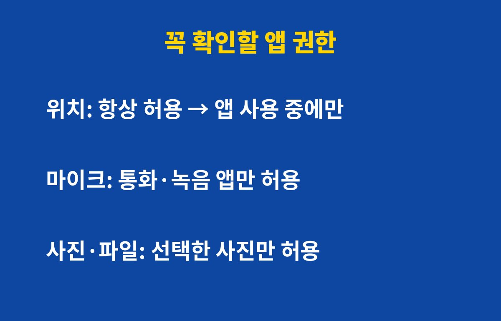

앱 권한은 스마트폰에서 위치·마이크·사진 3가지만 점검해도 개인정보 노출 위험을 크게 줄일 수 있어요. 스마트폰을 쓴다면 누구나 해당되는데, 그런데 다 끄면 오히려 앱이 안 돼서 불편해질 수 있어요. 이유는 아래에 있어요.
앱을 처음 깔 때 "허용"을 눌러둔 권한이 그대로 남아 있는 경우가 많아요. 날씨 앱이 연락처를 보고, 계산기 앱이 위치를 아는 상황이 흔하죠.
모든 권한을 한 번에 점검하기는 어려우니, 피해가 가장 큰 위치·마이크·사진/파일 3가지부터 보면 충분해요.

항상 허용이면 앱을 안 쓰는 중에도 내 이동 경로가 쌓일 수 있어요. 지도·배달·택시 앱이 아니라면 앱 사용 중에만 허용으로 바꾸는 게 안전해요.
집과 직장 위치가 이어지면 생활 패턴이 그대로 드러나기 때문에, 이 설정 하나만으로도 체감이 커요.
마이크는 통화, 녹음, 영상 촬영처럼 꼭 필요한 앱에만 허용하세요. 사진·파일 권한은 전체 허용 대신 선택한 사진만 허용이 가능한 기종이 많아요.
쇼핑·게임 앱이 전체 사진 접근을 요구한다면 한 번 의심해 볼 만해요.
폰을 쓴다면 위치, 마이크, 사진 권한만 먼저 봐도 충분히 효과가 있어요.
몰랐다면 지금 당장 확인해 보세요. 그대로 두면 결국 털린다는 경고가 남 이야기가 아니게 될 수 있고, 나중에 후회하게 돼요.
흔한 실수는 권한 요청 창을 읽지 않고 습관처럼 '허용'을 누르는 거예요.
손전등이나 계산기처럼 단순한 앱이 위치나 마이크를 달라고 하면 그 자체로 의심해 볼 만해요.
또 한 번 정리하고 끝내면 아쉬워요. 앱을 업데이트하거나 새로 깔면 권한 요청이 다시 생기거든요.
상단에 마이크나 카메라 사용 표시가 뜨는데 그 앱을 쓰고 있지 않다면 바로 확인해 보세요.
갤럭시는 오래 안 쓴 앱의 권한을 자동으로 거두는 옵션도 있으니 함께 켜 두면 좋아요.
이 정도만 해도 개인정보가 새는 길을 꽤 줄일 수 있어요.
앱 권한을 꺼도 필요할 때 다시 허용하면 되니 불편할까 걱정하지 않아도 돼요.
새 앱을 설치할 때마다 권한 요청 창을 한 번 더 읽어 보는 습관이 중요해요.
한 달에 한 번 이 순서로 점검하면 금방 끝나요.
아이 폰이나 부모님 폰도 함께 점검해 두면 가족 정보까지 지킬 수 있어요.
메뉴 이름은 기종과 버전에 따라 조금 다를 수 있어요.
처음 정리할 때는 앱이 많아 보여도 실제로 해 보면 금방 끝나요.
정리한 날짜를 달력에 적어 두면 다음 점검을 잊지 않아요.
새 앱을 깔 때는 그 앱이 왜 이 권한이 필요한지 한 번만 생각해 보세요.
이유가 떠오르지 않으면 일단 거절하고 필요할 때 허용하면 돼요.
지도 앱은 위치, 카메라 앱은 카메라처럼 이름과 맞는 권한만 남기면 기준이 단순해져요.
이렇게 기준을 하나 정해 두면 고민할 일이 줄어요.
가족 폰도 같은 기준으로 정리해 드리면 좋아요.
작은 습관이지만 개인정보를 지키는 데는 가장 확실한 방법이에요.
오늘 정리했다면 한 달 뒤 같은 날 다시 한 번만 확인해 보세요.
오늘 저녁에 딱 5분만 시간을 내 보세요.
생각보다 금방 끝나서 놀라실 거예요.
대부분 설정 → 개인정보(보안) → 권한 관리에서 권한별로 어떤 앱이 쓰는지 한눈에 볼 수 있어요. 기종마다 메뉴 이름은 조금 달라요.
| 권한 | 추천 설정 | 예외 |
|---|---|---|
| 위치 | 앱 사용 중에만 | 지도·내비 앱 |
| 마이크 | 필요한 앱만 허용 | 통화·녹음·영상 앱 |
| 사진·파일 | 선택한 사진만 | 갤러리·클라우드 앱 |
권한을 껐는데 앱이 꼭 필요한 기능에서 막히면, 그때 해당 권한만 다시 켜면 돼요. 오래 안 쓰는 앱은 아예 삭제하는 게 가장 확실해요.
도움이 됐다면 구독해 두세요. 생활 속 IT 보안 팁을 계속 알려드릴게요.
기사·공식 발표 기준이며 출시·가격 정보는 바뀔 수 있어요.